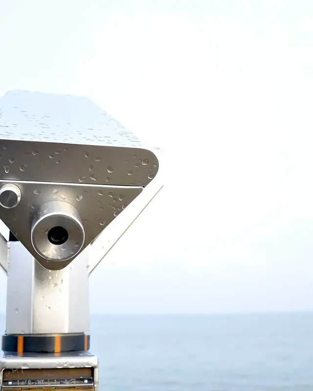
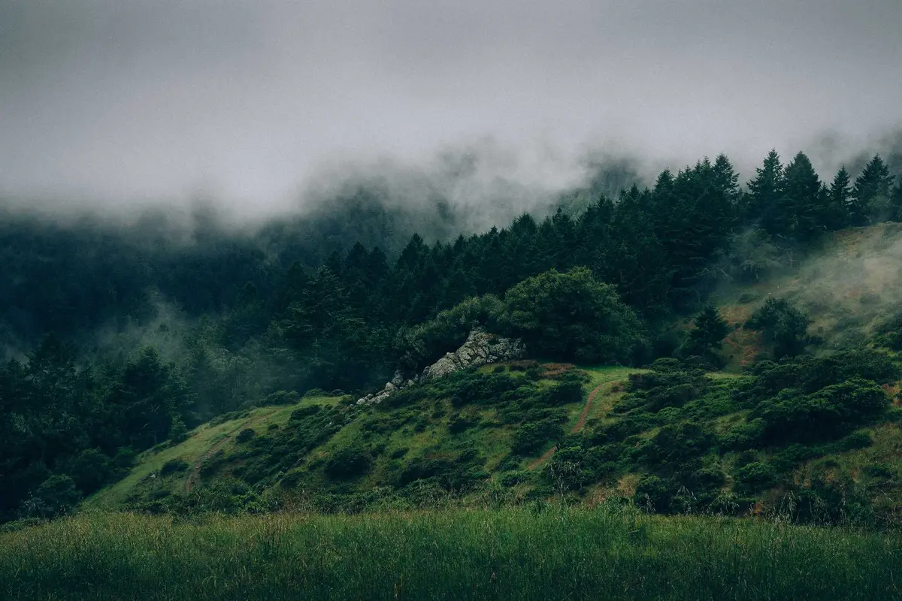
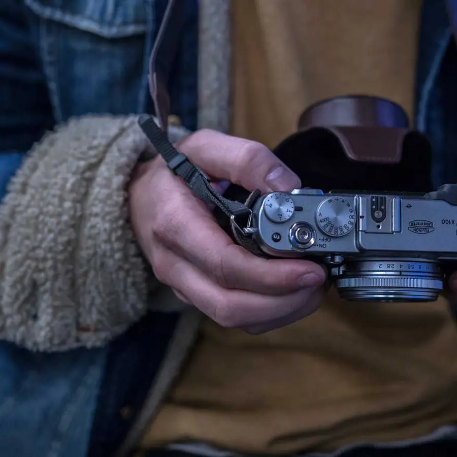
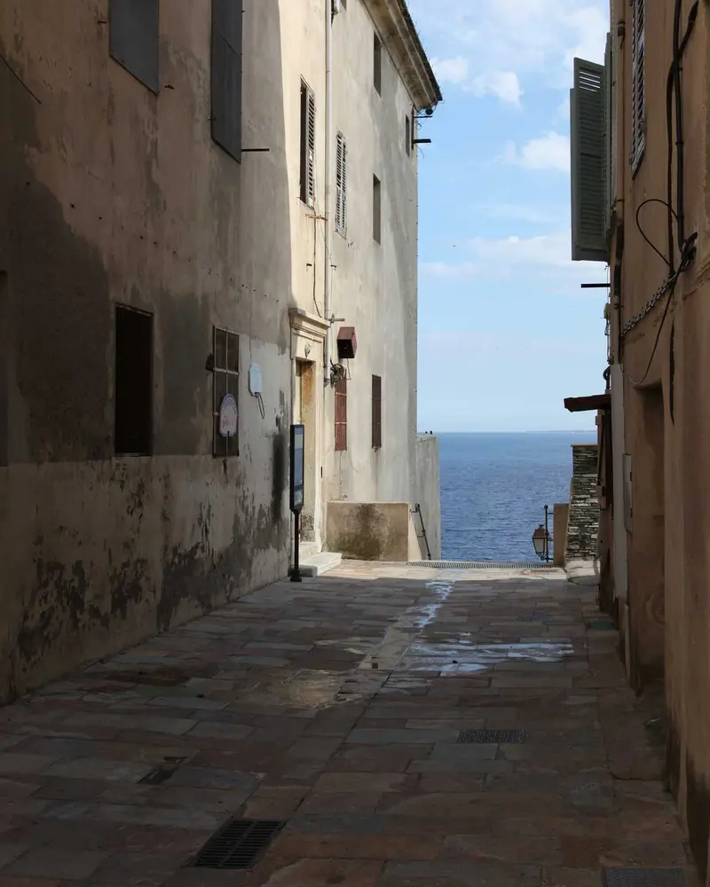
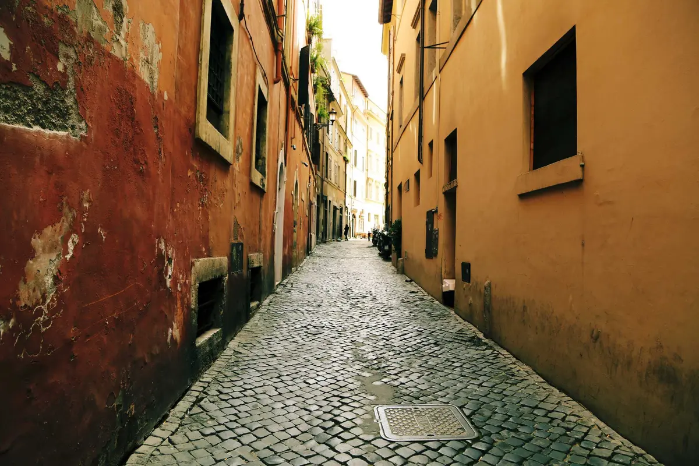
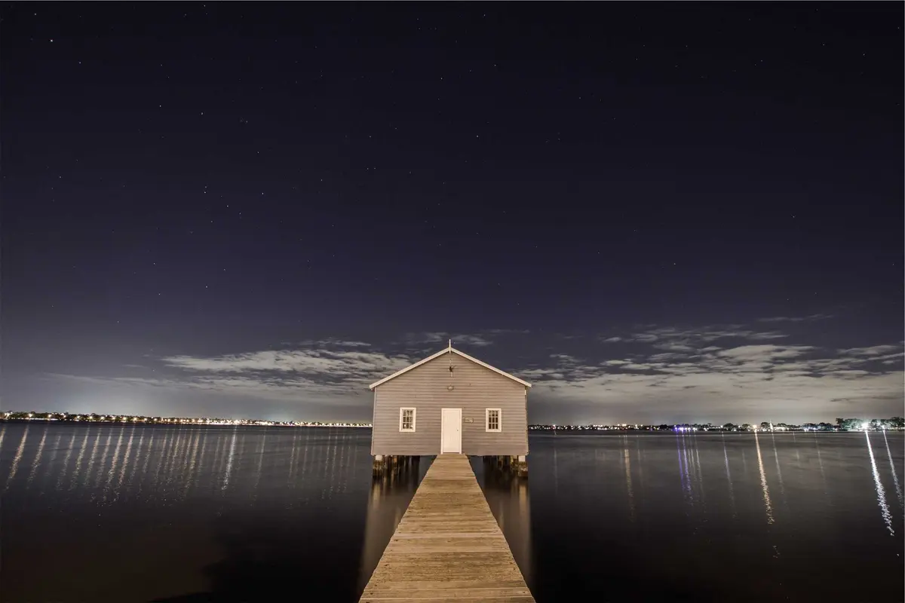
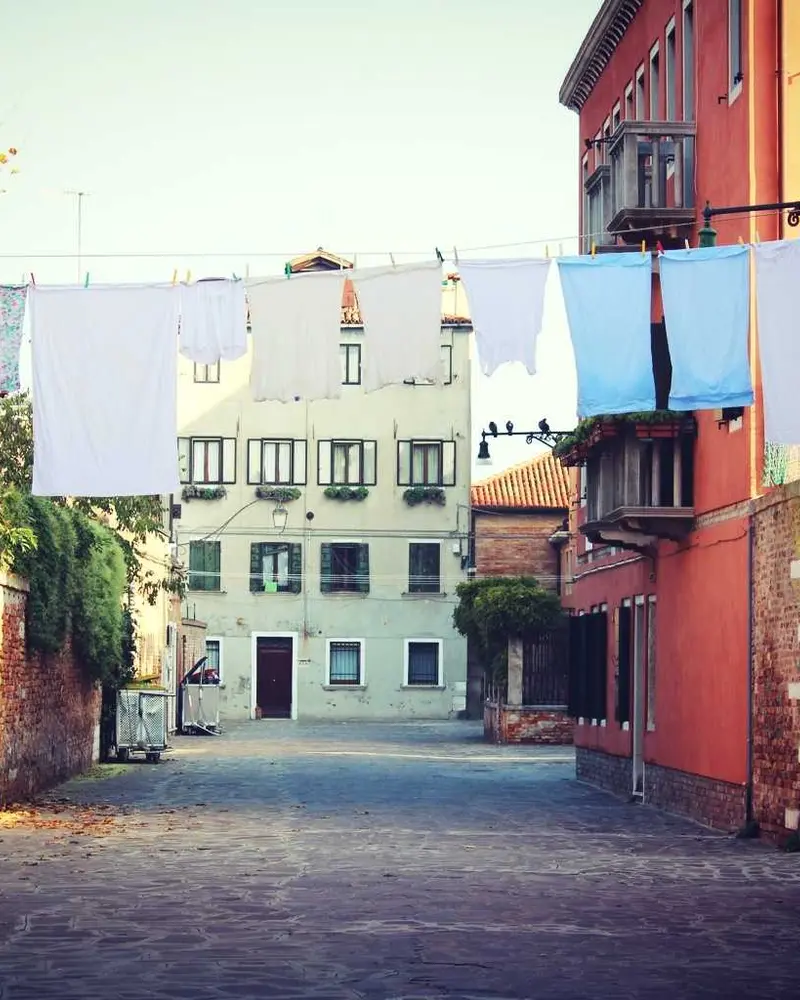

Asistec EOS
Esteban Negrete repara cámaras y lentes a domicilio en Quito. También fotografía por encargo.
- Montura
- Grupo trasero
- Diafragma
- Escala de distancias
- Anillo de enfoque
- Elemento frontal
Baja para desarmarlo
Quién está detrás
- Con base en
- Quito, Ecuador
- Modalidad
- Retiro y entrega a domicilio
- Atención
- Con cita, por WhatsApp
Asistec EOS no tiene mostrador ni vitrina: es Esteban Negrete, su banco de trabajo y una ruta por Quito. Retira tu cámara o tu lente donde estés, lo abre, lo limpia, lo repara y te lo devuelve probado. Y como también sale a fotografiar, sabe lo que cuesta que el equipo falle en plena sesión.
Equipos
- Cámaras réflex digitales
- Cámaras sin espejo
- Compactas y de bolsillo
- Cámaras analógicas de 35 mm
- Lentes fijos y zoom
- Lentes manuales antiguos
- Flashes y empuñaduras
- Canon
- Nikon
- Sony
- Fujifilm
- Panasonic Lumix
- Sigma
- Tamron
Qué arregla, qué fotografía
Cámaras
- Limpieza de sensor
- Obturador
- Pantalla y visor
- Ranuras y puertos
- Humedad y golpes
- Flash y zapata
- Mantenimiento general
Del sensor al obturador: lo que impide que tu cámara dispare bien.
Lentes
- Hongos y polvo interno
- Calibración de enfoque
- Motor de autoenfoque
- Diafragma
- Estabilizador
- Anillos de zoom y enfoque
- Montura y golpes
Óptica limpia, enfoque exacto y anillos que giran como deben.
Fotografía
La misma mano que calibra el lente, detrás del visor.
Pasa por un servicio para ver qué incluye. Al tocarlo se abre WhatsApp con el mensaje listo.
Del mensaje a la entrega
-
Escribes por WhatsApp
Cuentas qué equipo es y qué le pasa. Una foto o un video corto del problema ayudan mucho.

-
Esteban pasa por él
Acuerdan día, hora y sector. El equipo se retira en tu casa o en tu trabajo, con un recibo de lo entregado.

-
Lo abre y lo revisa
Se desarma lo necesario para encontrar la causa, no solo el síntoma, y se documenta con fotos.

-
Recibes el presupuesto
Precio en dólares, repuestos y plazo por escrito. Nada se repara hasta que digas que sí.

-
Repara y prueba
Después del arreglo, el equipo dispara, enfoca y se revisa en condiciones reales antes de salir.
-
Vuelve a tus manos
Entrega a domicilio. Lo pruebas frente a Esteban y te llevas las recomendaciones de cuidado.

Archivo fotográfico
24 fotografías · 2024–2026
Fotos de muestra: aquí va el trabajo de Esteban.



Nube baja 2026

Telémetro 2026 Túnel 2026 Canal 2025 Espiral 2025 Cumbre 2025



Callejón al mar 2025 Aristas 2025 Marejada 2025 Esfera 2025



Adoquines 2025 Vestíbulo 2025


Embarcadero 2024 Celosía 2024 Vías 2024 Andén 2024 Surco 2024 Pinar 2024



Ropa tendida 2024 Cubierta 2024 Isla 2024 Acero 2024


Antes de escribir
¿Dónde queda el taller? No hay local abierto al público. Esteban trabaja en su propio banco de reparación y se mueve por la ciudad: retira el equipo donde estés y lo entrega de vuelta.
¿Qué sectores de Quito cubre? El norte, el centro y el sur de la ciudad, además de Cumbayá, Tumbaco y Los Chillos con coordinación previa.
¿Cuánto cuesta una reparación? Depende de la falla y de los repuestos. Después de revisar el equipo recibes un presupuesto por escrito, en dólares, y tú decides si se repara.
¿Cuánto tiempo toma? Una limpieza o un mantenimiento suele resolverse en pocos días. Si hay que importar un repuesto, el plazo se avisa junto con el presupuesto.
¿El trabajo tiene garantía? Sí. Cada reparación se entrega con una garantía por escrito sobre el trabajo realizado; el plazo depende del tipo de arreglo.
¿Y si no tiene arreglo? Se te explica por qué, con fotos de lo encontrado, y el equipo vuelve a ti tal como salió.
¿Cómo se paga? En efectivo o por transferencia bancaria, al momento de la entrega y después de que pruebes el equipo.
¿Repara cámaras analógicas? Sí: obturadores mecánicos, fotómetros, visores y lentes manuales, siempre que existan repuestos o se puedan adaptar.
¿Cómo agendo una sesión de fotos? Por el mismo WhatsApp. Cuentas qué necesitas, la fecha y el lugar, y recibes una propuesta con precio y entregables.
Cuéntale qué le pasa
Se abre WhatsApp con tu mensaje listo para enviar. Esta página no guarda lo que escribes. Política de privacidad